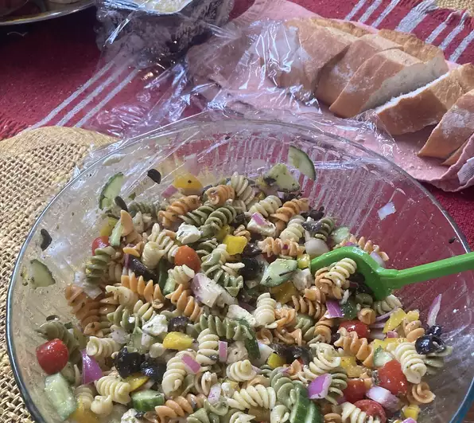

Home
Greek Pasta Salad
Cacio e Pepe
Perfect Soft Boiled Eggs
Greek Pasta Salad
This Greek pasta salad recipe makes a great summer salad.

Directions
- Fill a large pot with lightly salted water and bring to a rolling boil. Stir in penne and return to a boil. Cook pasta uncovered,
stirring occasionally, until tender yet firm to the bite, about 10 minutes; rinse with cold water and drain well.
- Whisk olive oil, vinegar, garlic, lemon juice, oregano, salt, and pepper together in a bowl; set aside.
- Combine pasta, tomatoes, green and red peppers, onion, cucumber, olives, and feta cheese in a large bowl. Pour vinaigrette over
the pasta mixture and mix well. Cover and chill for 3 hours before serving.